XiorkFlow使用帮助
XiorkFlow有友好的用户操作界面，完全可视化操作的界面。
以下式XiorkFlow的主操作界面：
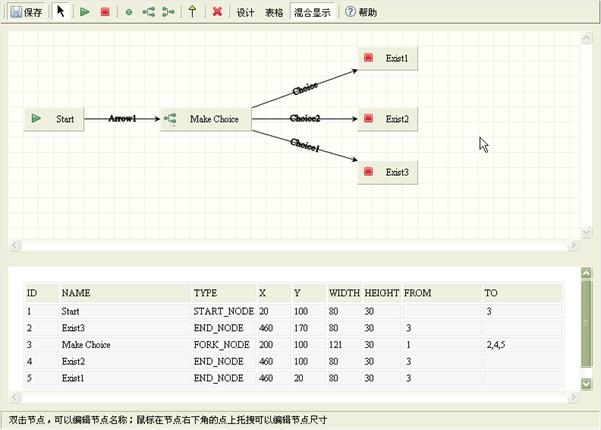
如图，界面分为工具栏、可视化编辑区、表格浏览区、状态栏。
下面，我们将详细介绍XiorkFlow的的使用。
§1.1 节点添加
节点包括开始节点、结束节点、任务几点、分支节点、汇聚节点。
在工具栏上选择节点按钮，例如点击开始节点按钮：

当前为添加开始节点状态，在可视化编辑区内点击鼠标，完成添加节点：
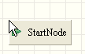
其他节点的添加类似。
§1.2 节点连接
节点连接是工作流节点的流向。
要建立从“节点1”到“节点2”的连接，首先用鼠标点击“节点1”上，如图：
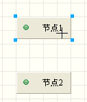
这是在状态栏出现：
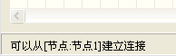
状态栏显示可以从“节点1”建立连接，按住鼠标不放，将鼠标托拽到“节点2”上：
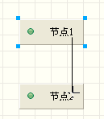
这个时候状态栏出现：
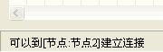
状态栏显示可以到“节点2”建立连接。
放开鼠标，连接建立成功：
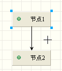
状态栏显示内容：
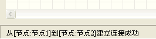
节点与节点的连接有着一定的规则：
² 开始节点：1个起始点，0个终止点。
² 结束节点：0个起始点，1个终止点。
² 任务节点：1个起始点，一个终止点。
² 分支节点：多个起始点，一个终止点。
² 汇聚节点：一个起始点，多个终止点。
只有满足这些规则的情况下，连接才能建立成功。
§1.3 节点的选择
选择节点，首先应该在工具栏上选择“选择”状态：
选择单个节点，仅需要在节点上点击：
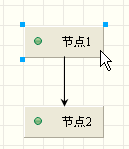
节点被选择后，在节点的四周将出现蓝色方块。
如果需要复选节点，按主“ctrl”键，用鼠标在节点上点击，点击后改变节点的选择状态，如果节点已北选则置为未选择状态，如果节点为未选择状态，则置为选择状态。
连接的选择类似。
§1.4 移动
选择工具栏的“选择”状态。
选择需要移动的节点和连接，用鼠标托拽到目标位置，即可以完成移动。
也可以使用键盘上的方向键，按下方向键，选择状态的节点和连接将根据方向键的方向移动。
连接的位置由系统根据节点自动修正。
§1.5 删除
选择需要删除的节点和连接，按下工具栏的删除按钮：
或者按下键盘的“Delete”键，即进行删除。
删除前将进行删除确认，防止用户误删除：
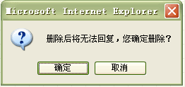
确认删除后，将执行删除操作。
§1.6 节点和连接的名称编辑
节点和连接显示一个文本名称，在工具栏选择“选择”状态，双击节点或者连接，即可以修改他们的名称。
双击节点，显示修改名称编辑框：
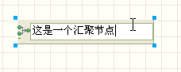
双击连接，显示修改名称编辑矿：
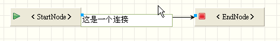
修改名称完成后，按“Enter”回车键，或者鼠标在旁边点击，即完成编辑操作。
§1.7 视图模式
视图模式包括：设计、表格、混合显示。在工具栏中进行选择：
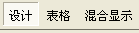
设计模式下，工作区域将完全显示可视化编辑区：
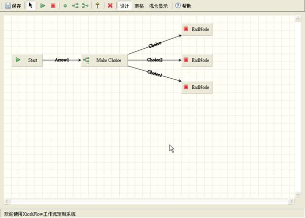
表格模式下，工作区域将完全显示表格数据：
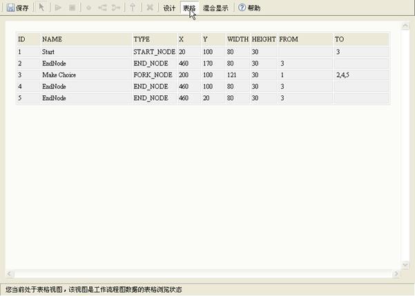
混合显示模式下，工作区域将同时显示可视化编辑区和表格数据：
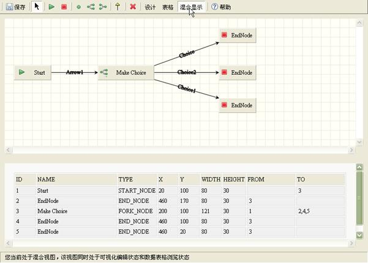
§1.8 保存
工作流程图的保存时，按下工具栏的保存按钮：
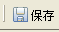
系统将根据当前状态进行保存。
如果是添加工作流程图模式，将执行添加操作；如果是编辑状态，则执行更新操作。
操作结束后将弹出操作结果的信息窗口。
1.8.1 添加
首先，系统询问工作流程图将要保存成的名称：
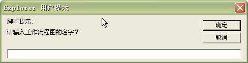
输入名称后，点击“确定”按钮。系统执行保存。
1.8.2 更新
如果是更新，系统将对原有的工作流程图进行更新。